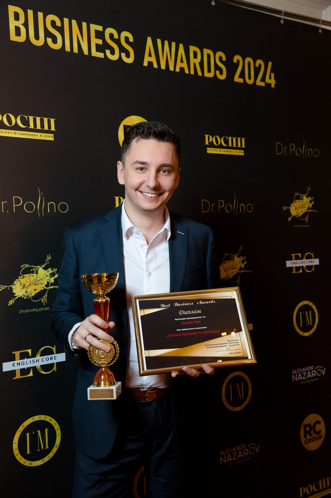

>₽450 млн
дополнительной выручки в 2025 году: разработал методологию ценообразования для всего продуктового портфеля при удержании клиентской базы в целевых значениях.
Chief Product Officer · GM · Business Unit Head
Смотрю на продукт как на механизм управления бизнесом: выручкой, удержанием базы, скоростью изменений и стратегическими ставками компании.
~₽6 млрд
годовая софтверная выручка портфеля под управлением
20
продуктовых команд
300+
человек в матричном подчинении, 70 в прямом
15+ лет
в продуктовом управлении
Продуктовый портфель MANGO OFFICE, компания с более чем 50 тыс. B2B-клиентов, часть группы «Ростелеком».
Product Executive и CPO с 15+ годами опыта управления продуктовым портфелем, P&L и командами в B2B SaaS, телекоме, FinTech и AdTech. Отвечаю за продуктовый портфель MANGO OFFICE с годовой софтверной выручкой около ₽6 млрд, 20 продуктовыми командами и более 300 сотрудниками в матричном подчинении.
Работаю на стыке продукта, технологий и коммерции: формирую стратегию развития, перестраиваю и усиливаю команды, запускаю новые направления и довожу инициативы до измеримого финансового результата.
>₽450 млн
дополнительной выручки в 2025 году: разработал методологию ценообразования для всего продуктового портфеля при удержании клиентской базы в целевых значениях.
№1 к 2030
сформировал и защитил перед акционерами 5-летнюю продуктовую стратегию: выход в лидеры облачных омниканальных коммуникаций и диалогового AI.
+30% YoY
рост выручки направления голосовых роботов: заключил эксклюзивное партнёрство с одним из лидеров AI-рынка при сокращении внутренней R&D-команды направления.
+30% к притоку
ожидаемый эффект совместного продукта с T2 (виртуальная АТС, корпоративный мессенджер, мобильная связь) после полной раскатки в 2027 году; переориентировал коммерческую команду партнёра на продажу совместного решения.
8% ставок
высвободил при перестройке структуры департамента с перераспределением ресурса в коммерцию, ИТ и маркетинг без потери эффективности; усилил команду наймом продуктовых лидеров из Сбера, Яндекса и МТС.
Сентябрь 2024 — настоящее время
Манго Телеком (MANGO OFFICE)
B2B SaaS · Telecom · UCaaS. Лидер рынка виртуальных АТС и SaaS для контакт-центров, >50 тыс. B2B-клиентов, часть группы «Ростелеком».
Апрель 2023 — Сентябрь 2024
МТС Финтех
FinTech, >17,5 млн клиентов финтех-сервисов, команда 78 человек.
Июнь 2022 — Апрель 2023
ПГК
Крупнейший оператор грузовых ж/д перевозок, >100 тыс. вагонов в оперировании.
Сентябрь 2019 — Июнь 2022
Сбербанк
HR-платформа «Пульс», заменившая SAP-решение в группе Сбер и получившая контракты на SaaS-версию для крупных компаний.
Ноябрь 2018 — Сентябрь 2019
Media Instinct Group
Медиа-холдинг с совокупным медиа-бюджетом клиентов ₽57,2 млрд без НДС (2019).
Июнь 2017 — Сентябрь 2018
Эвотор
Производитель онлайн-касс для SMB, 400 тыс. проданных касс в 2018 году.
Январь 2011 — Июнь 2017
Beeline · AdTech-стартап · Ostrovok.ru
Ранний карьерный опыт.

Авторская модель, охватывающая все аспекты работы руководителя — от личных качеств до формирования стратегии. Синтез практики из Сбера, МТС Финтеха и MANGO OFFICE и более 20 ключевых книг по лидерству, стратегии, организационному дизайну и даже психоанализу.